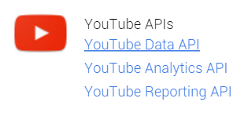

handleiding
stap 1: get a google/youtubekey
Als je deze al gedaan hebt, ga naar stap 2.
Ga naar volgende link
Hier maak je een project aan.(Maakt niet uit welke naam)
Je wordt hierna herleid naar het dashboard waar je op enable en manage api's klikt.
Ga daarna naar de youtube data api's.

Enable deze en ga naar credentials.
bij choose: webbrowser
en eronder: public key
en klik op What credentials...
bij de volgende stap kun je een naam ingeven, maar is niet nodig.
klik vervolgens op create api key
uiteindelijk heb je je key.
voeg deze in in js/code.js bij youtubeKey
stap 2: get a spotifykey
Ga naar: get auth code
klik op: get oauth token, en vul deze in de eerste text box
stap 3: afspeellijst selecteren
rechtermuisknop op de afspeellijst die je wilt downloaden en selecteer: spotifyUrl kopieren.
Vul deze in bij URL
Druk hierna op download